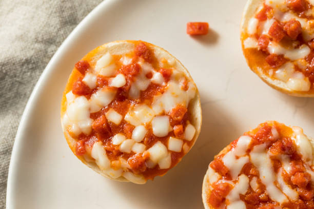

bagelPizzas

DESCRIPTION
This is a very easy recipies for bage pizzas. This recipie is so easy even a child can do it.
The recipe should take 15 minutes to complete
INGRDIANTS
- 8 mini bagels, split
- ¼ cup pizza sauce
- ⅓ cup shredded pizza cheese blend
- 16 slices turkey pepperoni (such as Hormel®)
DIRECTIONS
- Preheat oven to 425 degrees F (220 degrees C). Line a baking sheet with aluminum foil.
- Arrange bagels on prepared baking sheet, cut sides up. Spoon a thin layer of pizza sauce over each bagel half and sprinkle with pizza cheese. Place 2 pepperoni slices on each bagel.
- Bake in the preheated oven until cheese is melted and pepperoni is lightly browned, about 6 minutes.